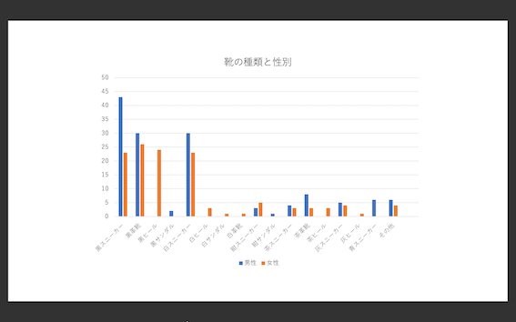

街の人々は足元にどのようなオシャレをしているのか観察した。
観察状況
観察日：10月18日、14時ー15時
観察場所：神奈川大学〜マークイズ周辺
観察対象
- 性別(男女)
- 靴の色・形
分析表

対象：男性138、女性124
合計：262
考察
男女ともにモノトーンカラーの靴を着用している人が多かった。モノトーンはその洋服にも合わせやすいため使用する人が多かったと考えた。
また、黒や茶色の革靴を使用するひとが比較的多かったのは、会社員の多い平日の昼帯であったからだと考えた。
外の気温が低かったということもあり、サンダルやヒールを履いている人があまりいなかったのではないかと考えた。
まとめ
普段目を向けない周りの人たちの服装に目を向けてみると、それぞれの個性の中にも
年齢・性別などによって選ぶ色やデザインの傾向が見えてきた。
前のページへ戻る